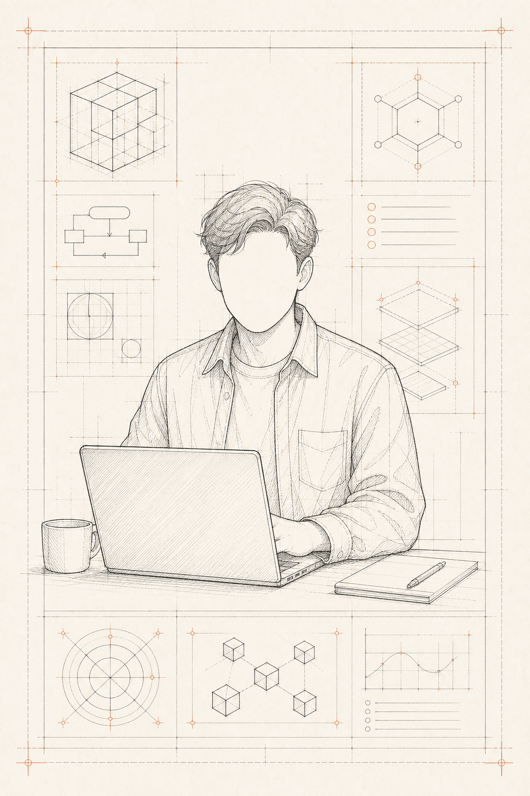

About me
我是 ZW,一个用 AI 做产品的技术实践者
把个人网站、工具站、小程序当成真实样本
记录从需求、开发、上线到变现的全过程

AI PRODUCT / BUILDER
WRITE · SHOOT · BUILD
SPEC.001
FOCUS : PRODUCT & AI
TOPIC : BUILD & SHIP
FORMAT : ARTICLE / TOOL
PRODUCT: DIGITAL
VALUE : LONG-TERM
VER. 1.0.0
DATE. 2025
ID 7°31′ N
L3114°05′ E
ID // ZW
CATEGORY
IN PUBLIC
FOCUS
· CONTENT
· PRODUCT
· TECH
EST. 2023
写
WRITE
拍
SHOOT
创
BUILD
全平台信号台
LIVE / SOON- @myzwilpan X LIVE
- 知乎 / ZW 文章 LIVE
- 短视频 - SOON
- Bilibili - SOON
- YouTube - SOON
Writing
写 - WRITE
写
拍SOON
创SOON

把 AI 产品过程讲清楚
视频内容筹备中
▶
00:00
0%
拍 - SHOOT
Shoot
v0.1.0 · compiling...
0%
GET IN TOUCH / 联系
Let’s talk.
聊聊 AI 产品、工具站、小程序或内容合作。
当前开放合作 · Available